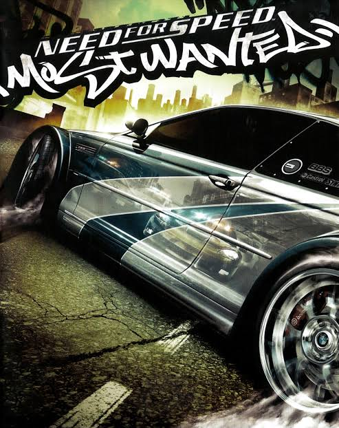
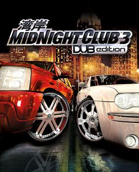
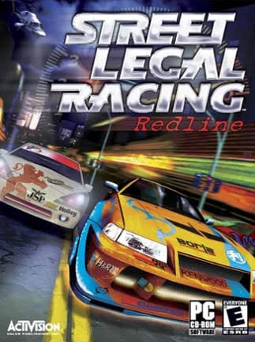
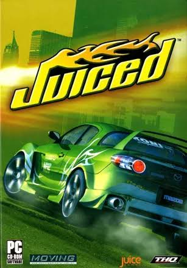
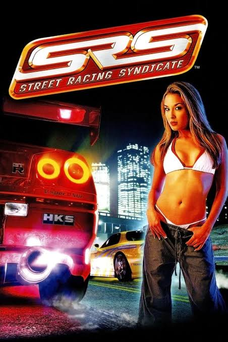
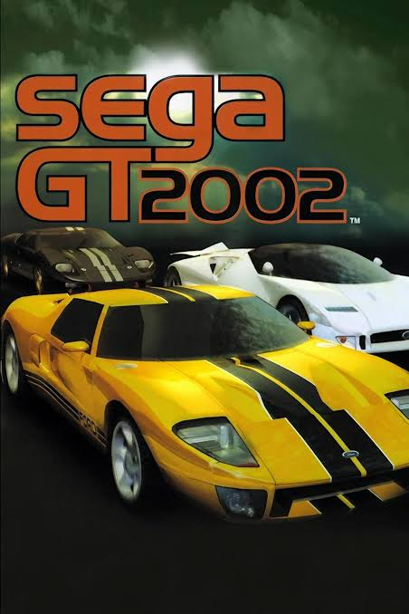

Sagas Principales

NFS Underground 1
- Año: 2003
- Plataformas: PS2, PC, Xbox, GC
- Foco Tuning: Óxido nitroso, vinilos por capas, alerones masivos y luces de neón.
El juego que inició la fiebre del tuning tras el impacto de Fast & Furious. La intro con el tema "Get Low" de Lil Jon se quedó grabada a fuego en nuestra cabeza para siempre.

NFS Underground 2
- Año: 2004
- Plataformas: PS2, PC, Xbox, GC
- Foco Tuning: Audio en maletero, puertas de tijera, neón en motor e hidráulicos.
El rey indiscutible. Añadió la exploración libre por la ciudad nocturna de Bayview y un nivel de personalización de piezas mecánicas y estéticas que ningún juego moderno ha logrado superar.

NFS Most Wanted
- Año: 2005
- Plataformas: PS2, PC, Xbox 360, PSP
- Foco Tuning: Kits de carrocería anchos, vinilos de carreras y el mítico BMW M3 GTR.
Trasladó las carreras ilegales al día y sumó persecuciones policiales destructivas de infarto. Derrotar a los 15 miembros de la Blacklist era pura adrenalina.

Midnight Club 3: DUB
- Año: 2005
- Plataformas: PS2, Xbox, PSP
- Foco Tuning: Llantas cromadas gigantes, suspensiones neumáticas y SUV de lujo.
Velocidad arcade salvaje en colaboración directa con la revista norteamericana DUB Magazine. Podías tunear desde un Golf hasta Hummers gigantes o motos chopper.
Joyas Ocultas y Nicho
Juégalos o te reviento

Street Legal: Redline
- Año: 2003
- Plataformas: PC
- Foco Tuning: Simulación total, desmontar motores pieza a pieza y blocks de cilindros.
El juego de nicho definitivo en PC. No tuneabas con menús simples: tenías que meter el coche al taller, abrir el capó, desmontar el bloque motor tornillo a tornillo, cambiar pistones, bielas, y ajustar la presión del turbo a mano.

Juiced
- Año: 2005
- Plataformas: PS2, PC, Xbox
- Foco Tuning: Marcas reales (HKS, GReddy), apuestas de coche (Pink Slips) y daños.
La alternativa más seria a NFS. Tenías que ganarte el respeto de las bandas de la ciudad por tu estilo o potencia, organizar tus propias carreras urbanas y arriesgar los papeles de tu coche en desafíos directos.

SRS: Syndicate
- Año: 2004
- Plataformas: PS2, PC, Xbox, GC
- Foco Tuning: Licencias oficiales de piezas, carreras por dinero y modelos reales de la época.
Una joya muy underground distribuida por Namco. Mezclaba carreras callejeras nocturnas realistas con físicas exigentes, multas de policía por conducción temeraria y videos reales de modelos de revistas tuning.

Sega GT 2002
- Año: 2002
- Plataformas: Xbox
- Foco Tuning: Modo Crónica, compra de piezas usadas, garaje clásico y restauración.
La respuesta directa de SEGA a Gran Turismo. Era único porque tenías que arrancar comprando coches viejos de los 70 u 80 en el mercado de ocasión, buscar piezas baratas de segunda mano en el periódico para potenciarlos y competir.

Street Legal: Redline
- Año: 2003
- Plataformas: PC
- Foco Tuning: Simulación total, desmontar motores pieza a pieza y blocks de cilindros.
El juego de nicho definitivo en PC. No tuneabas con menús simples: tenías que meter el coche al taller, abrir el capó, desmontar el bloque motor tornillo a tornillo, cambiar pistones, bielas, y ajustar la presión del turbo a mano.

Juiced
- Año: 2005
- Plataformas: PS2, PC, Xbox
- Foco Tuning: Marcas reales (HKS, GReddy), apuestas de coche (Pink Slips) y daños.
La alternativa más seria a NFS. Tenías que ganarte el respeto de las bandas de la ciudad por tu estilo o potencia, organizar tus propias carreras urbanas y arriesgar los papeles de tu coche en desafíos directos.

SRS: Syndicate
- Año: 2004
- Plataformas: PS2, PC, Xbox, GC
- Foco Tuning: Licencias oficiales de piezas, carreras por dinero y modelos reales de la época.
Una joya muy underground distribuida por Namco. Mezclaba carreras callejeras nocturnas realistas con físicas exigentes, multas de policía por conducción temeraria y videos reales de modelos de revistas tuning.

Sega GT 2002
- Año: 2002
- Plataformas: Xbox
- Foco Tuning: Modo Crónica, compra de piezas usadas, garaje clásico y restauración.
La respuesta directa de SEGA a Gran Turismo. Era único porque tenías que arrancar comprando coches viejos de los 70 u 80 en el mercado de ocasión, buscar piezas baratas de segunda mano en el periódico para potenciarlos y competir.